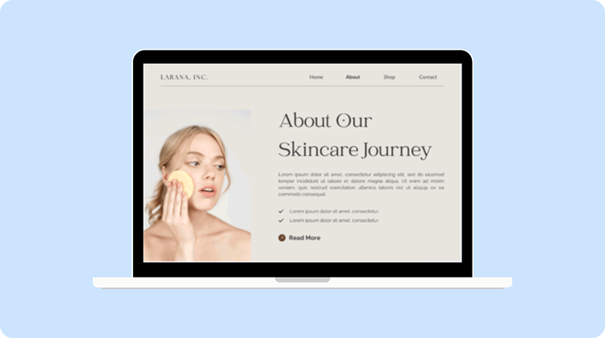
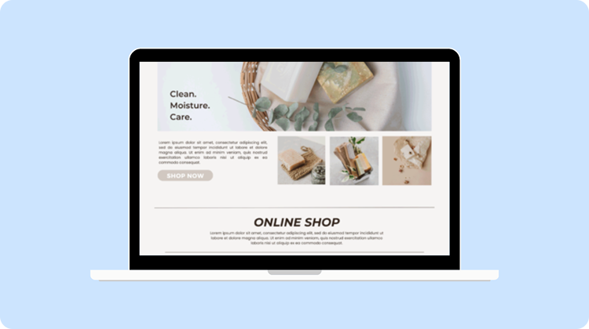
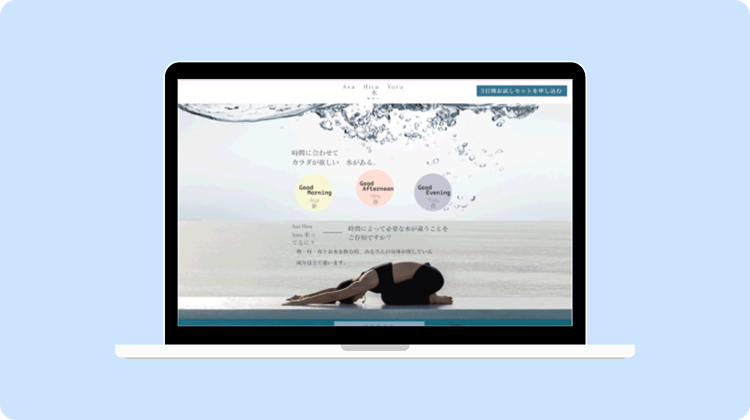

W.R.C
TROUBLE
W.R.CはLP専門の制作会社。
今まで数多くのお客様を制作からその後まで
サポートしてきました。
お客様のストーリーをLPに落とし込み、
売上に繋がるLPを実現します。
POINTS
LP専門の制作会社として
10年以上の実績
LP専門の制作会社として、単に美しいページを作るのではなく、売上に直結する「響くLP」を追求してこれまで数多くのお客様のLPを制作してきました。
徹底した競合調査とターゲット分析を行い、ユーザーの心理的ハードルを一つひとつ解消していく構成案をご提案。
これからもお客様のビジネス成果を最大化させるパートナーであり続けます。
要件定義から振り返りまで
一気通貫サポート
W.R.C.ではディレクター、デザイナー、コーダー、カメラマン、マーケターまで全て専任スタッフとして勤務しています。
お客様のニーズに合わせて、適材適所でサポートいたします。
LP公開後も
定期的な振り返りを実施
LPは公開して終わりではありません。定期的な振り返りと改善アクションの実施が不可欠です。
W.R.C.ではマーケターがCVR率を計測し、お客様にとって効果的な改善案を提案いたします。
LP公開後も、さらに良いWEBサイトを目指して、一緒にサポートして参ります。
FLOW
本サイトのフォームよりお問い合わせください。
追って弊社担当よりご連絡をいたします。
お客様のLPに対するご要望を伺い、それらをLPに盛り込みます。
加えて弊社からも、よりお客様のサービスや事業の魅力が伝わる見え方などご提案いたします。
伺ったご要望をもとにLP制作をいたします。
まずサイト構成案（ワイヤーフレーム）→デザイン→コーディングの順で進めます。
それぞれが完成次第、都度お客様にご確認いただき、問題なければ次の段階へ進みます。
全ての作業が完了したらLPを実際に公開いたします。
公開作業も全て弊社で担当いたしますので、ご安心ください。
実際にサイトを運用し、どれくらいの効果があったかを定期的に振り返ります。
また振り返り内容を踏まえて、次の施策をご提案いたします。
WORKS

女性向けスキンケア製品のLPを制作しました。

女性向けスキンケア製品のLPを制作しました。

女性向けミネラルウォーターのLPを制作しました。
USER'S VOICE
自社製品のこだわりをどう表現すべきか悩んでいましたが、こちらの意図を深く汲み取ったデザインに感動しました。単に綺麗なだけでなく、私たちが大切にしているストーリーがページ全体から伝わってきます。公開後、お客様から「サイトの世界観に惹かれた」と言っていただける機会が増え、ブランドへの信頼が一段階上がったと実感しています。
「なんとなく良さそう」なデザインではなく、なぜこの配置なのか、なぜこのコピーなのかを全てデータや心理学に基づいて説明してくれました。制作過程での議論も非常にスピーディーで、こちらのビジネスモデルを深く理解しようとする姿勢にプロ意識を感じました。リリース後のコンバージョン率も予測を上回り、投資以上の価値を十分に回収できています。
これまでは作って終わりの制作会社が多かったのですが、こちらは公開後の数値を分析し、常に「次の一手」を提案してくれます。ヒートマップを用いた具体的な改善策は、経営判断をする上でも非常に参考になります。単なる発注先ではなく、共に事業をグロースさせるパートナーとして、今後も長くお付き合いしていきたいと思える会社です。
FAQ
原稿や構成案が全くない状態でも、依頼は可能でしょうか？
はい、もちろんです。
むしろ戦略段階からの参画を推奨しております。
弊社では、お客様へのヒアリングを通じて「誰に・何を・どう伝えるか」という戦略設計から着手いたします。ヒアリングシートに基づき、市場調査や競合分析を行った上で、成約率を最大化させる構成（ワイヤーフレーム）やコピーライティングまで一貫して担当いたしますので、安心してお任せください。
制作したLPで、確実に成果（売上・成約）は出ますか？
成果を確約することは難しいですが、最大化に向けて全力でサポートします。
LPの成果はターゲット設定・広告運用・市場環境など複合的な要因に左右されます。弊社では徹底したヒアリングと競合分析をもとに「売れる構成」を設計し、公開後もデータを計測しながら改善提案を続けます。成果にコミットし続けるパートナーとして、長期的にお客様のビジネスに伴走いたします。
他の安価なテンプレート制作サービスと、貴社の違いは何ですか？
戦略設計から公開後の運用まで、一貫してご支援できる点が最大の違いです。
テンプレートサービスはデザインの量産には向いていますが、お客様のビジネスやターゲットに最適化された設計は困難です。弊社では競合調査・ターゲット分析をもとにゼロからLP構成を設計し、デザイン・コーディング・公開後の改善提案まで専任スタッフが一気通貫で担当します。